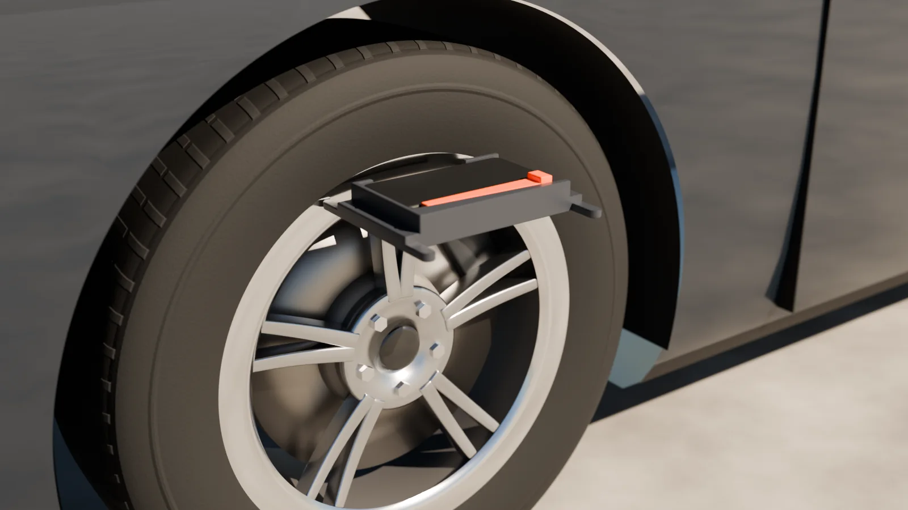

Measure toe
A full lap reads all four wheels, each visited twice and read twice per visit: 16 readings, about four minutes, or about two and a quarter for a practised user.

Choose what to measure
On Full Alignment, choose a vehicle with Select Vehicle (optional; without one, results are checked against the generic targets). In the Measure menu, tick Toe, with Front and Rear both ticked for the full picture.
- One axle alone gives only that axle’s total toe. To get each front wheel’s own toe and steer-ahead, tick Rear too. To get each rear wheel’s own toe, tick Thrust. The app reminds you when you press Start.
- A line under the menu says what the walk will give, for example Toe on all four wheels and steer-ahead, the thrust angle.
Start
Tap Start. Before the lap the app may show, in order: the 30-day calibration reminder if it is due; How to Get Better Readings the first time; the lessons while the tutorial is on; and every time, the steering question:
It’s straight starts the lap. If it isn’t, tap Back, center it, and roll the car forward a few feet again.
1. The rest on the ground
Set the bracket flat, screen up, on the ground (the trunk lid or a toolbox works too) for ten seconds. The screen says Place on Ground until the bracket has been still for a second, then Leave on Ground with a countdown. This is where the gyroscope’s zero comes from, so don’t touch it.
2. The hold
Both hands, one at each end of the bracket. Each index finger runs down the outer side of the wheel-side prong, nail facing out, its tip level with the prong’s nose, so the fingertip touches the lip beside the nose. Each thumb lies flat on the bracket’s end, and the other fingers curl under.
- Never let a fingertip reach past the nose.
- Press lightly. Don’t squeeze or twist, and don’t press on the screen.
- Only the prong noses and your fingertips touch the rim, never the tire’s rubber.
3. At each wheel
- Go to the wheel the screen lights. The app sets the order: rear left, rear right, rear left, rear right, then front right, front left, front right, front left. A line on screen names the wheel, and Hold 3 of 16 shows how far you are.
- Bracket flat on top of the wheel, screen up, FRONT toward the front of the car, both prong noses on the flat ring of the rim’s lip at about 11 and 1 o’clock. FRONT always points to the front of the car, on every wheel and both sides: you never turn the bracket round.
- Level it. A bar in the middle of the car drawing shows if one prong sits higher than the other. Slide the bracket round the rim a little until the bar sits between the two marks.
- Hold still until it buzzes. The reading is taken by itself; no tap needed.
- Lift and replace. When it asks for the same wheel again, lift the bracket right off the wheel, put it back on the same spot, and hold still. Don’t walk anywhere. This measures how well you can put it back.
The status light helps: grey settling, keep holding; green steady, good; amber jittering, one prong isn’t touching, push it in; amber drifting, it is creeping along the rim, hold still; red bumped, take it off and put it back on. Undo takes back the last reading.
4. Between wheels
Carry the bracket with the screen on and the app open. Don’t set it down or drop it, and don’t dawdle: under 30 seconds per walk is best. A long walk lowers the confidence.
Sounds and buzzes
Sounds play on the phone’s media volume.
| Sound | Vibration | Meaning |
|---|---|---|
| One beep | One short buzz | A reading was taken |
| A low buzz | Two quick buzzes | That reading was refused: hold it again |
| Two high beeps | One long buzz | The lap closed: the results are ready |
| Three rising notes | Three buzzes | The lap did not close: see the result card |
The end of the lap
When the lap closes, the result appears and saves itself on the phone. When it finishes, the app stops reading the sensors and lets the screen sleep. Read the result.
If an axle won’t close, the app shows Redo Rear or Redo Front and you read only that axle again; the rest is kept. After two redos the lap ends as Not Closed, with no numbers. What to do.
Back during a lap asks Stop this lap?. Start over goes back to the start.